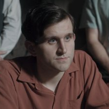
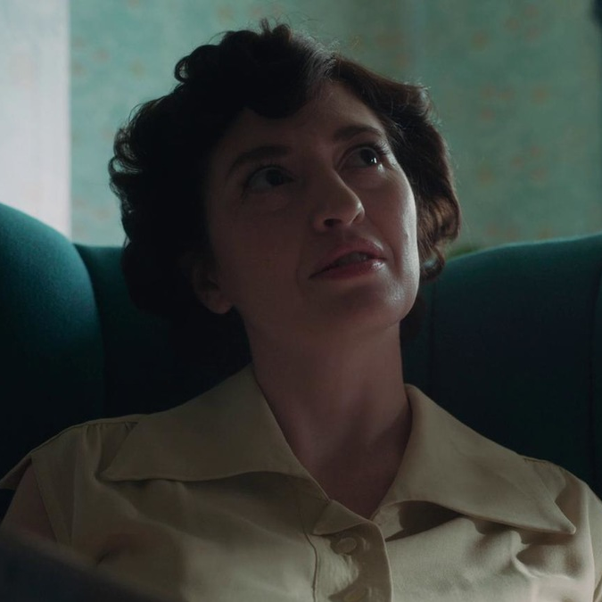
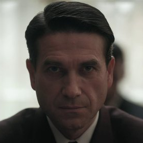

Ход королевы
«Ход королевы» рассказывает историю шахматного вундеркинда-сироты Бет Хармон, которая стремится стать величайшей шахматисткой мира, но при этом борется с эмоциональными проблемами, а также с наркотической и алкогольной зависимостью.
Актёрский состав
-

Бенни Уоттс
Томас Броди-Сангстер
-

Бет Хармон
Аня Тейлор-Джой
-

Гарри Белтик
Гарри Меллинг
-

Таунс
Джейкоб Форчун-Ллойд
-

Альма Уитли
Мариэль Хеллер
-

Василий Боргов
Марцин Дорочиньский
Эпизоды
-
Эпизод 1
«Дебюты»
Очутившись в приюте в возрасте 9 лет, Бет развивает сверхъестественные способности к игре в шахматы и растущую зависимость от зелёных транквилизаторов, которые там дают детям.
Смотреть на Netflix -
Эпизод 2
«Размены»
Внезапно погрузившись в новую запутанную жизнь в пригороде, Бет-подросток изучает своих одноклассников и вынашивает план участия в шахматном турнире.
Смотреть на Netflix -
Эпизод 3
«Сдвоенные пешки»
Поездка в Цинциннати вовлекает Бет и ее мать в вихрь путешествий, а достижения девушки в шахматном мире удостаиваются освещения в прессе. Бет нацелилась на Открытый чемпионат США в Лас-Вегасе.
Смотреть на Netflix -
Эпизод 4
«Миттельшпиль»
Русский класс открывает дверь в новый мир. В Мехико Бет встречает устрашающего Боргова, а ее мать заигрывает с другом по переписке.
Смотреть на Netflix -
Эпизод 5
«Вилка»
Вернувшись домой в Кентукки, потрясенная Бет воссоединяется с бывшим соперником, который предлагает помочь ей отточить свою игру перед чемпионатом США.
Смотреть на Netflix -
Эпизод 6
«Откладывание партии»
После тренировки с Бенни в Нью-Йорке Бет направляется в Париж на матч-реванш с Борговым. Но дикая ночь загоняет ее в саморазрушительную спираль.
Смотреть на Netflix -
Эпизод 7
«Эндшпиль»
Визит старого друга заставляет Бет считаться со своим прошлым и переосмыслить свои приоритеты. Близится самый важный матч в ее жизни.
Смотреть на Netflix